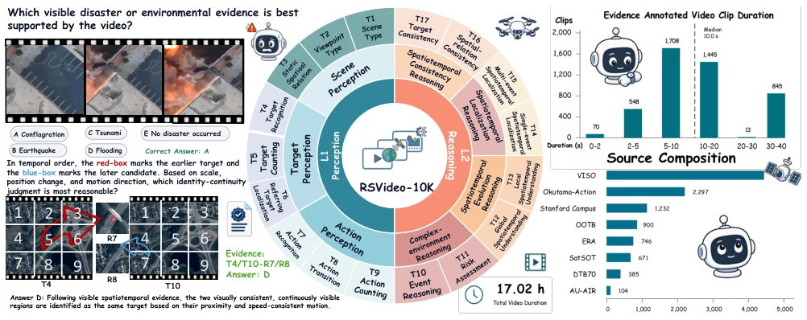
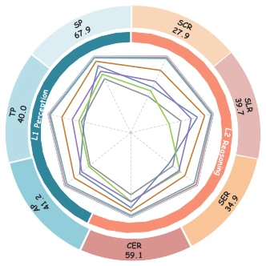
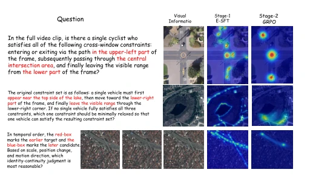
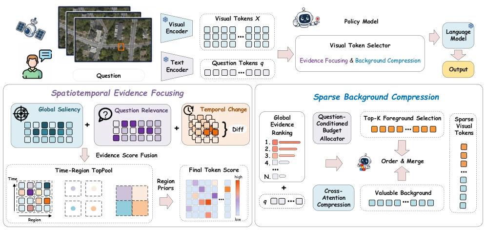
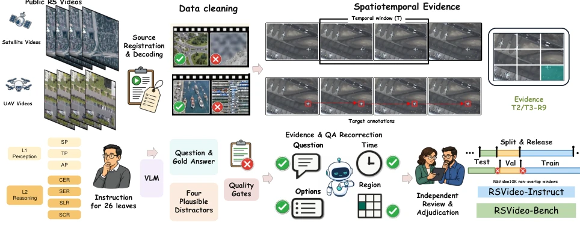
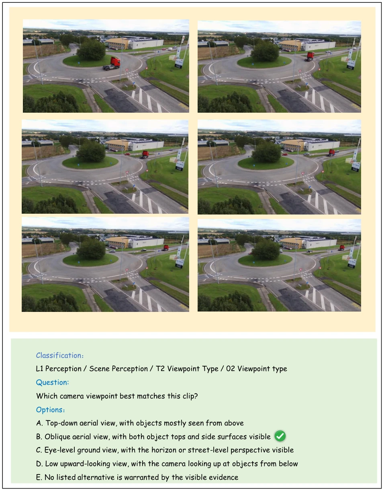
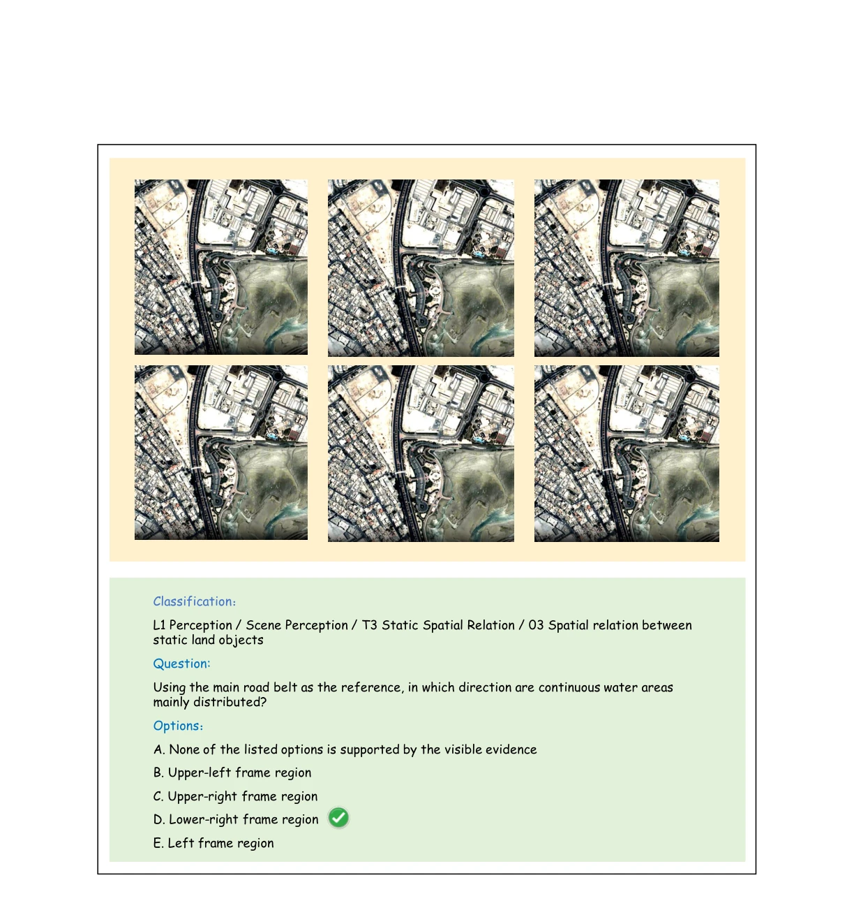
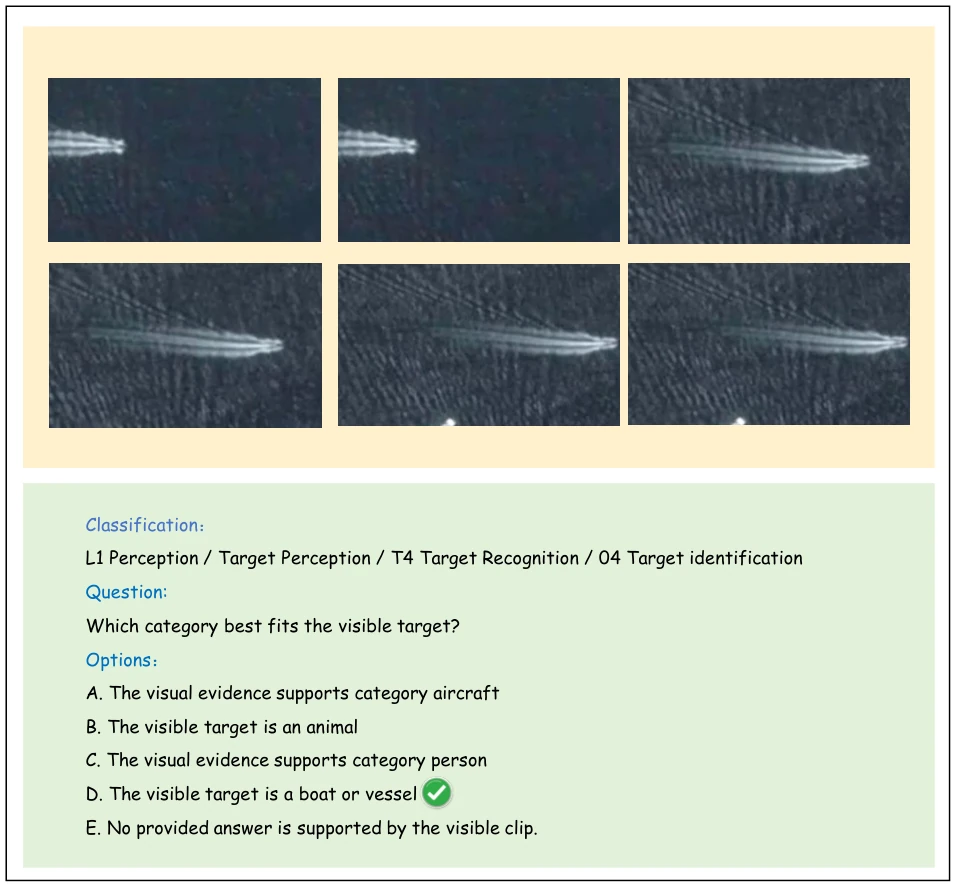
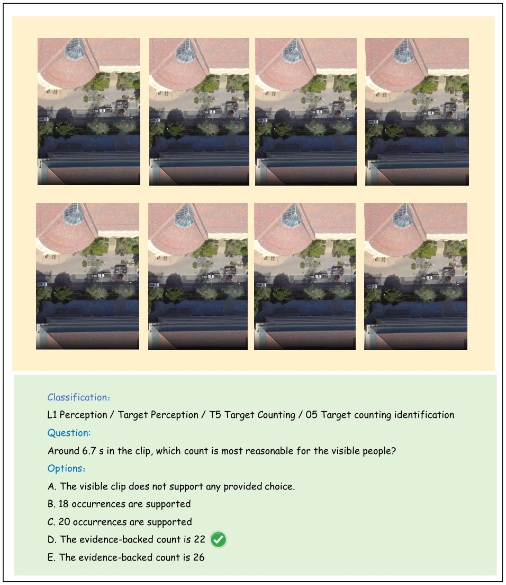
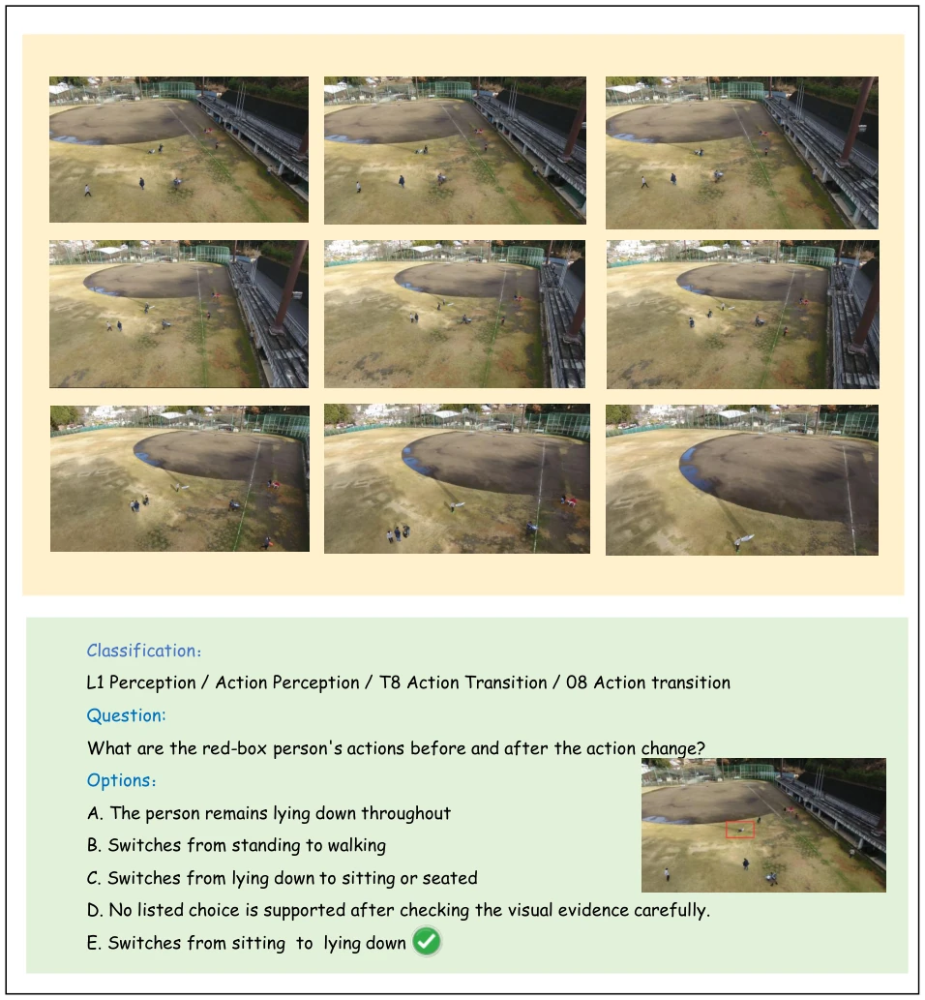

This paper delivered a cold shower to the VLM community: models scoring 70% on natural videos drop directly to 30% on remote sensing videos; this gap is even larger than the difference between my hair and my boss's hair. The authors did not engage in empty talk; they directly created the RSVideo-10K dataset, utilizing drone and satellite videos for training. Methodologically, they employed a two-stage training process, first SFT then RL, with the core objective being to teach the model to "focus on key points" and not be misled by grass and roads in the background. Although the final accuracy is only slightly over 40%, under the hellish difficulty of remote sensing videos, achieving a 9-point improvement over the baseline is already considered "life-saving". However, this method essentially relies on RL to optimize token selection; whether the recognition capability for extremely small targets truly undergoes a qualitative change remains to be seen. Additionally, although the dataset is large, it mainly relies on public sources, and copyright and diversity remain underlying concerns.
Remote sensing video is crucial in traffic monitoring and disaster response, but existing VLMs basically suffer from "poor adaptation". Static remote sensing datasets [12, 16, 19] can only view single images and cannot capture dynamic changes; multi-temporal datasets [17, 30, 37] have intervals that are too long (days to years), unlike videos that record second-level motion. Existing UAV datasets [4-6, 28, 29, 44, 45] are too fragmented and lack unified evaluation. Figure 1 shows that existing models perform passably on Video-MME [9], but the average gap on RSVideo-Bench is 40.7%. This indicates that models cannot find key evidence in remote sensing scenarios and are easily trapped by small targets, short-duration states, and complex spatial relationships. Therefore, there is an urgent need for a unified benchmark capable of evaluating continuous remote sensing video understanding capabilities.

Figure 2. Overview of RSVideo-10K. The dataset contains 10,773 five-choice QA instances grounded in 4,629 audited evidence clips from eight public video sources. It covers 17.02 hours of continuous remote-sensing video with 1,473,150 decoded frames. RSVideo- 10K comprises RSVideo-Instruct for training and validation and RSVideo-Bench for fixed evaluation. The figure summarizes the source composition, clip duration of evidence annotated videos, and the L1/L2 capability distribution.
The overall process is divided into two steps. The first step is evidence-aware supervised fine-tuning (E-SFT), utilizing spatiotemporal evidence annotated in the dataset (temporal location + spatial region) to initialize the model, enabling it to know where the evidence corresponding to the answer lies. The second step is reinforcement learning (RL), optimized based on the GRPO algorithm. The core innovations lie in "spatiotemporal evidence focus" and "sparse background compression". The model scores each visual token, fusing global saliency, question relevance, and spatiotemporal changes to select high-value tokens. Simultaneously, low-value background tokens are compressed into a few context slots, retaining key information under a fixed token budget. The reward function design is crucial; it considers not only whether the answer is correct but also evidence alignment (whether spatiotemporal positions match) and background compression efficiency. This forces the model to learn to "focus on key points" rather than guessing blindly. In specific implementation, foreground tokens are selected via Top-K, the background compression ratio is predicted using a Beta distribution, and finally, the sequence is merged and input to the language model. This mechanism effectively addresses the severe problem of background redundancy in remote sensing videos, allowing the model to focus on key areas under limited computational resources.

Figure 3. Performance of representative vision-language models on RSVideo-Bench across seven capability groups. The values on the outermost ring represent the results of the proprietary model Gemini-3-Pro on RSVideo-Bench.

Figure 5. Qualitative comparison of question-conditioned visual evidence selection before and after reinforcement learning. From left to right, each row presents the question, the relevant video frame(s), the attention map of the Stage-1 E-SFT model, and that of the Stage-2 GRPO model. The three examples respectively re- quire cross-window trajectory reasoning, minimal relaxation of a spatiotemporal constraint set, and temporal identity-continuity judgment. After GRPO, the attention maps are more concentrated on task-relevant targets, regions, and transition frames.
The dataset RSVideo-10K contains 10,773 QA instances and 17 hours of video, covering drone and satellite footage. Evaluation utilizes RSVideo-Bench, comparing 26 open-source VLM baselines (ranging from 1B to 241B). Results are shown in Table 2; RSVideo improved performance across all models, with InternVL3.5-14B showing the maximum improvement of 9.01%, and Qwen3.6-27B reaching 40.63%. Ablation experiments (Table 3) demonstrate that both the evidence alignment reward (Rst) and background compression reward (Rbg) are effective and indispensable. Transfer experiments (Table 4) show improvements on MVBench and Video-MME [9] as well, indicating that the learned focus strategy possesses generalizability. Qualitative results (Figure 5) show that attention becomes more concentrated on targets after RL. Additionally, the improvement on L2 reasoning tasks is more pronounced, indicating that evidence focus provides greater assistance for complex reasoning.

Figure 4. Overview of RSVideo. The visual encoder and text encoder first generate visual tokens and question tokens. RSVideo combines global saliency, question relevance, and temporal change for spatiotemporal evidence focusing, integrated with spatiotemporal region priors to obtain final evidence scores for visual tokens. Then RSVideo performs sparse background compression. Based on the evidence scores, RSVideo selects high-value spatiotemporal tokens through global ranking and compresses low-value background tokens into question- related contextual slots. It finally orders and merges the selected foreground tokens and compressed background slots into a sparse visual sequence for the vision-language model to generate the answer.

Figure 6. Complete RSVideo data-construction pipeline. Public videos first pass source registration, decoding, quality screening, and task/leaf binding before question construction. Each candidate item is then grounded by temporal and, when needed, spatial evidence; paired with one gold answer and four plausible distractors; checked through joint evidence–label correction, option permutation, independent review, and expert adjudication; and finally frozen after clip-level split isolation and release audit. Human verification determines the final labels and evidence fields.
其他图片Other Figures

Figure 8. Qualitative example for Leaf 02, viewpoint type.

Figure 9. Qualitative example for Leaf 03, spatial relation between static land objects.

Figure 10. Qualitative example for Leaf 04, target identification.

Figure 11. Qualitative example for Leaf 05, target counting.

Figure 14. Qualitative example for Leaf 08, action transition.